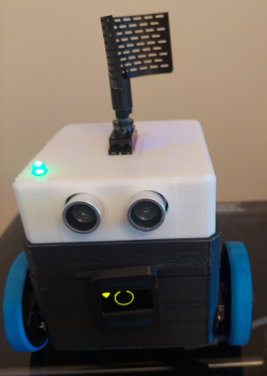

by Phil Pownall
Many thanks to the huge number of dedicated Home Assistant Community members who found many of these code solutions. This example collects all the things required for a robot together in one place.
This cute and easy-to-assemble robot consists of an ESP32 module, an expansion board, a USB battery pack, and two 360-degree servo motors. No soldering is required (unless you want to make all the wires as short as possible).
Servo Motors provide an alternative to a Robot which uses L298N motor speed controllers and TT motors from RC cars. This robot uses cheap and readily available SG90 or MG90 360-degree servo motors.
An ESP32 expansion board and a USB power pack have enough power to supply the ESP32 module, the servo motors, and some sensors and LED's. No PWM controller board is required.
The USB power pack is prevented from auto-shutdown by using a 3rd servo motor rotating a thing (antenna) periodically. The robot uses just one output of the USB battery pack for the expansion board: you can add an ESP-CAM using the second output.
The code is entirely contained in ESPHome using 500 lines of yaml.
The ESP32 provides a distance-from-the-router measurement feature using the onboard WiFi; an HC-SR04 Ultrasonic sensor provides a presence detection and short-range measurement feature.
The Robot chassis is a modified (slightly enlarged) 3D-printed enclosure based on the Otto Robot.
For a total bill-of-materials cost of less than $20 plus about $20 for a USB battery pack if you don't have one just lying around...
This recipe documents how to build an ESP32 module-based robot with control from an ESPHome web page or from a Home Assistant Dashboard. With a separate ESPHome voice peripheral, voice control capability can be provided. A 10,000 mAh USB battery pack will keep the robot alive for 5+ days, and it all fits inside the (slightly enlarged) 3D-printed Otto robot chassis.

The advantage of using an expansion board is that it provides a large number of pins to connect to motors and sensors. For a servo motor, the 3-pin connector can be placed immediately adjacent to the GPIO pin that controls the servo signal input. The voltage jumper on the expansion board is in the 5V position so that the V row on the expansion board is at 5V. The board provides the capacity to add many sensors and components: e.g. an Ultrasonic distance, LED's, passive buzzers, and a display - limited only by the number of available pins on the ESP32 module and the capacity of the USB power supply.
After you have 3D-printed the 3 robot chassis components (Base, Waist, and Top), proceed to assembling the robot as follows:
Attach the 2 wheel servos to the Otto Base with the wires inside. The motors are best mounted from the outside, but you can mount them from the inside if you are really good with fiddly small screws.
Place the USB power pack on top of the motors in the Otto base, with the USB connectors at the back of the base, and route the servo wires around the corners of the power pack.
Add the Otto Waist to the Otto Base by squeezing the sides carefully. Insert the ESP32 module into the expansion board. Don't forget to place the jumper on the expansion board to the 5V position so that the V row adjacent to the ESP32 pins is at 5V. Place the Expansion board on top of the USB battery pack.
Attach the servo wires to the expansion board. The Servo 1 3-wire connector (robot left wheel) goes onto GPIO19. The Servo 2 3-wire connector goes on to GPIO21 - these pins are adjacent. Attach the Servo 3 3-wire connector on to GPIO18. Be careful not to reverse the connectors - the wire colours should match the colour of the rows on the expansion board - Black is G (GND), Red is V (5V), S is yellow (signal).
Attach the passive speaker + to S (signal) on GPIO23. Attach the other leg to the G (GND) on GPIO23.
Attach the SSD1306 display data wire SDA to S on GPIO26 and the display clock wire SCL to S on GPIO25. Attach the VDD wire to the V pin on GPIO25 or GPIO26, and the GND wire to the G pin on GPIO25 or GPIO26. Place the display on the slot in the front of the Otto Waist. Optionally, you could 3D-print a small case for the display and glue it to the front of the Otto Waist.
Attach the HC-SR04 ultrasonic TRIG wire to S on GPIO32 and the ECHO wire to S on GPIO35. Attach the VCC wire to V and the GND wire to G on GPIO32 or GPIO35.
Trim the wires of a 220-ohm resistor to fit into the hookup wire terminals (to avoid shorts). Attach one end of the 220-ohm resistor wire to S on GPIO35 and the other end to the long leg (Anode) of the Green LED. Attach the other leg (Cathode) wire of the Green LED to the G pin on GPIO35.
Insert the ultrasonic sensor into the front holes in the Otto Top, and the Green LED into the corner hole in the Otto Top. Attach Servo 3 to the under side of the Otto Top with two screws - using the under side makes it easier to disassemble the robot, and provides a sleek look to the antenna. Attach the Otto Top to the Otto Waist by squeezing the sides carefully.
Attach the small end of the USB cable to the expansion board. Attach the large end of the USB cable to one output of the USB power pack. Press the Power button on the side of the USB power pack, and enjoy!
The major code segments are as follows (a full yaml file can be found on the github page):
Audio feedback to user commands is provided using a passive buzzer and Rtttl tunes and notes.
The code uses global variable definitions to store the Rtttl tunes and notes (called tunes and notes). Select templates (called tune and note) are used to provide a more descriptive name for each tune or note.
So, to play a tune on the web page or Home Assistant Dashboard, you select the tune name in the select template tune. The index i of the select template is then used to index into the tunes array, and the string associated with this index is then input into rtttl.play.
A button is also defined so that the next tune can be played using the ESPHome web server page or a Home Assistant Dashboard.
The passive buzzer uses one LEDC PWM channel: the servo motors and the green LED use others. Be careful when assigning LEDC PWM channels.
substitutions:
# ESP32 peripheral pin assignments
passive_buzzer: GPIO23
globals:
# an array of strings to store tunes
- id: tunes
type: std::vector<std::string>
restore_value: no
initial_value: '{"siren:d=8,o=5,b=100:d,e,d,e,d,e,d,e,d,e,d,e,d,e,d,e,d,e,d,e,d,e,d,e",
"scale_up:d=32,o=5,b=100:c,c#,d#,e,f#,g#,a#,b",
"scale_down:d=32,o=5,b=100:b,a#,g#,f#,e,d#,c#,c",
"two_short:d=4,o=5,b=100:16e6,16e6",
"two_up:d=16,o=5,b=100:c,b",
"beep:d=4,o=5,b=100:16e6",
"raspberry:d=16,o=5,b=100:2e",
"do_re_mi:d=16,o=5,b=100:4c,4d,4e,4f,4g,4a,4b,2c6",
"three_down:d=16,o=5,b=100:d,d,c"}'
# an array of strings to store notes
- id: notes
type: std::vector<std::string>
restore_value: no
initial_value: '{"play_c:d=16,o=5,b=100:4c",
"play_d:d=16,o=5,b=100:4d",
"play_e:d=16,o=5,b=100:4e",
"play_f:d=16,o=5,b=100:4f",
"play_g:d=16,o=5,b=100:4g",
"play_a:d=16,o=5,b=100:4a",
"play_b:d=16,o=5,b=100:4b",
"play_c6:d=16,o=6,b=100:4c"}'
select:
# a select template to choose a tune and play it
- platform: template
name: "Tune"
id: tune
optimistic: true
options:
- "Siren"
- "Scale Up"
- "Scale Down"
- "Two Short"
- "Two Up"
- "Beep"
- "Raspberry"
- "Do Re Mi"
- "Three Down"
initial_option: "Scale Up"
on_value:
then:
- rtttl.play:
rtttl: !lambda 'return id(tunes)[i].c_str();'
# a select template to choose a note and play it
- platform: template
name: "Note"
id: note
optimistic: True
options:
- "C"
- "D"
- "E"
- "F"
- "G"
- "A"
- "B"
- "C6"
on_value:
then:
# - logger.log:
# format: "on_value Chosen option: %s (index %d) song %s"
# args: ["x.c_str()", "i", "id(notes)[i].c_str()"]
- rtttl.play:
rtttl: !lambda 'return id(notes)[i].c_str();'
button:
# play a tune
- platform: template
name: Play
id: tune_play
on_press:
- select.next:
id: tune
# Passive buzzer with "+" on output ledc_4 -> pin ${passive_buzzer}
rtttl:
output: ledc_4
# ledc PWM output for the Passive Buzzer
- platform: ledc
pin: ${passive_buzzer}
id: ledc_4
channel: 4
Visual feedback to user commands is provided using an SSD1306 128x64 display and LED lights, and an optional 3rd servo provides a rotating thing or ESP-CAM - see the servo motor control section below.
The on_boot automation is used to turn on the LED lights after boot, providing feedback that the node is running. The Blue LED on the ESP32 module flashes while the node is booting and then stays solid blue after the boot (and after the connection to Home Assistant is establised if api: is used). The green LED turns on and off every 3 seconds to provide a heartbeat.
The SSD1306 display is used to show a simple animation (a line and a circle), changing every 13 seconds using the Interval: code block. More complex animations can be shown at the expense of processing power and time (it takes a while to update 128x64 pixels).
substitutions:
# ESP32 peripheral pin assignments
led_green: GPIO4
display_sda: GPIO26
display_scl: GPIO25
esphome:
name: robot
friendly_name: robot
on_boot:
then:
- light.turn_on: blue_led
- light.turn_on: green_led
light:
# Status LED shares the blue led between status and an addressable light
# light flashes until the node is booted up and connected to a serial monitor
- platform: status_led
name: Blue LED
id: blue_led
pin: GPIO2
# green led
- platform: binary
name: Green LED
id: green_led
output: led_6
internal: true # keep the LED internal so that it doesn't spam the HA log
# font for the display
font:
- file: 'fonts/arial.ttf'
id: font1
size: 18
output:
# ledc PWM output for the green led
- platform: ledc
pin: ${led_green}
id: led_6
channel: 6
frequency: "1000Hz"
i2c:
# an I2C bus for the SSD1306 display
- id: bus_b
sda: ${display_sda}
scl: ${display_scl}
scan: True
frequency: 400kHz
display:
- platform: ssd1306_i2c
model: "SSD1306 128x64"
reset_pin: GPIO27 # unused pin
address: 0x3C # implicitly connects to I2C bus
id: my_display
flip_x: True
flip_y: True
pages:
- id: page1
lambda: |-
it.line(9, 45, 117, 45);
- id: page2
lambda: |-
it.circle(63, 0, 60);
interval:
# update the display page
- interval: 13s
then:
- display.page.show_next: my_display
- component.update: my_display
# Use the green LED as a heartbeat
- interval: 3s
then:
- light.toggle: green_led
- delay: 1s
- light.toggle: green_led
Distance measurement is acccomplised in two ways: using an Ultrasonic sensor, and using the ESP32 WiFi capability.
The Ultrasonic sensor measures the distance directly using an HC-SR04 sensor. Care must be taken to allow the sensor to "warm up" after boot, and to not update it too frequently, as it will just timeout and return NaN values.
The WiFi RSSI distance measurement uses the WiFi component RSSI value of the ESP32 which is returned every 60 seconds, or on demand using a button template. A copy sensor is used for the formula to determine the distance to the transmitter (your WiFi router). The WiFi wifi_rssi_1m is determined by measuring the WiFi RSSI when the robot is 1m from the transmitter. The formula comes from Stack Overflow
Distance_WiFi = 10^((wifi_rssi_1m - wifi_rssi)/(10 x wifi_nfactor))
Hint: if you have a second router, or you are close to your neighbours, you can periodically scan the closest WiFi networks and provide a triangulation capability to (for example) determine which room the robot is in. It is handy to have the robot drive around to produce an "RSSI Map" of your house.
The Ultrasound sensor can be used for presence detection if the robot is placed close to where a human (or dog, or cat) is located at some point. In the servo control section below, this capability is used to prevent the robot from running into an object when the Go Forward button is pressed.
substitutions:
# ESP32 peripheral pin assignments
ultrasonic_trigger: GPIO32
ultrasonic_echo: GPIO35
globals:
# Define a constant environment factor for the wifi distance calculation
# And the measured WiFi RSSI at 1m from the router
- id: wifi_nfactor
type: float
restore_value: no
initial_value: '3'
- id: wifi_rssi_1m
type: float
restore_value: no
initial_value: '-37'
button:
# Initiate a distance sensor read
- platform: template
name: Distance Measure
on_press:
- component.update: distance
# Initiate an WiFi RSSI distance sensor read
- platform: template
name: Distance Measure WiFi
on_press:
- component.update: wifi_rssi
sensor:
# Define HC-SR04 Ultrasonic sensor
- platform: ultrasonic
trigger_pin: ${ultrasonic_trigger}
echo_pin: ${ultrasonic_echo}
name: "Distance"
id: distance
update_interval: 2min
timeout: 6m
pulse_time: 40us
filters:
- filter_out: nan
- platform: wifi_signal
name: WiFi RSSI
id: wifi_rssi
update_interval: 60s
# Calculate distance from router
- platform: copy
name: "Distance Wifi"
id: distance_wifi
source_id: wifi_rssi
unit_of_measurement: "m"
accuracy_decimals: 1
filters:
- lambda: return pow(10, (( id(wifi_rssi_1m) - id(wifi_rssi).state ) / (10 * id(wifi_nfactor))));
Two servo motors are used to move the robot. One servo is mounted facing back, so it has to be set in reverse in order to move forward. The MG90S servos are metal-gear versions of the more common SG90 servos, although either could be used. The servo speeds are selected using substitutions for the servo positions, which need to be established by experimentation. The servos are also 360-degree servos - that is, once a position - i.e. "speed" - is set, they keep on rotating. A relatively long transition length (2 seconds) is set to reduce the startup current and to overcome inertia (the USB battery pack is quite heavy).
Note that the code below incorporates a distance measurement before moving forward so that the robot doesn't run into something, assuming that the HC-SR04 Ultrasonic distance sensor is mounted in a forward-facing position.
Optionally, a 3rd servo can be used to provide a thing to move. On this robot, the thing is a tiny 3D-printed antenna mounted on the top of the robot, which has a functional use - it consumes a tiny amount of current which keeps the USB power pack alive (normally, it would shut down after 30 seconds when the ESP32 is in a normal state and the servo motors are not running). So, a "shutdown" button is used to shut down the Robot from the ESPHome node web page or from a Home Assistant Dashboard, and 30 seconds later the USB power pack turns off.
Alternately, use a 180-degree servo for Servo 3, and mount an ESP-CAM module on top of the robot to provide First-Person View capability. the ESP-CAM module is powered via a second USB cable to the second ouput of the USB power pack.
To power on the Robot, the (physical) USB power pack power button is pressed, and the ESP32 module then boots.
An "Interval:" automation is used to rotate the antenna every 13 seconds for a few seconds.
substitutions:
# servo speeds
stop_speed: "0"
forward_speed: "0.08"
reverse_speed: "-0.12"
thing_speed: "0.10"
wiggle_delay: "0.5s"
op_delay: 2.2s
# ESP32 peripheral pin assignments
left_wheel_servo: GPIO19
right_wheel_servo: GPIO21
thing_servo: GPIO18
script:
- id: do_wiggle
then:
- button.press: servos_left
- delay: $wiggle_delay
- button.press: servos_right
- delay: $wiggle_delay
- button.press: servos_stop
button:
# do a wiggle
- platform: template
name: Wiggle
id: wiggle
on_press:
- script.execute: do_wiggle
# buttons for servo presets
- platform: template
name: Go Forward
id: servos_forward
icon: "mdi:arrow-up-bold"
on_press:
then:
# when moving forward, check for an obstacle first and only move if the way is clear
- component.update: distance
- if:
condition:
lambda: 'return id(distance).state > 0.3;'
then:
- servo.write:
id: servo_1
level: ${forward_speed}
- servo.write:
id: servo_2
level: ${reverse_speed}
- platform: template
name: Go Reverse
id: servos_reverse
icon: "mdi:arrow-down-bold"
on_press:
- servo.write:
id: servo_1
level: ${reverse_speed}
- servo.write:
id: servo_2
level: ${forward_speed}
- platform: template
name: Stop
id: servos_stop
icon: "mdi:stop"
on_press:
then:
- servo.write:
id: servo_1
level: 0
- servo.write:
id: servo_2
level: 0
- platform: template
name: Go Right
id: servos_right
icon: "mdi:arrow-right-top-bold"
on_press:
- servo.write:
id: servo_1
level: ${forward_speed}
- servo.write:
id: servo_2
level: ${forward_speed}
- platform: template
name: Go Left
id: servos_left
icon: "mdi:arrow-left-top-bold"
on_press:
- servo.write:
id: servo_1
level: ${reverse_speed}
- servo.write:
id: servo_2
level: ${reverse_speed}
switch:
# switch to toggle servo 3 antenna
- platform: template
name: Antenna
id: antenna
optimistic: true
internal: true
turn_on_action:
- servo.write:
id: servo_3
level: ${thing_speed}
turn_off_action:
- servo.write:
id: servo_3
level: 0.0
output:
# Servo motor outputs
# Note that the servos do not show up in Home Assistant
# So we use button templates to control them
- platform: ledc
pin: ${left_wheel_servo}
id: ledc_0
channel: 0
frequency: 50 Hz
- platform: ledc
pin: ${right_wheel_servo}
id: ledc_1
channel: 1
frequency: 50 Hz
- platform: ledc
pin: ${thing_servo}
id: ledc_2
channel: 2
frequency: 50 Hz
# Servo motor platform definitions
servo:
- id: servo_1
output: ledc_0
auto_detach_time: 0s
transition_length: 2s
- id: servo_2
output: ledc_1
auto_detach_time: 0s
transition_length: 2s
- id: servo_3
output: ledc_2
auto_detach_time: 0s
transition_length: 2s
interval:
- interval: 13s
then:
# turn the antenna on and off
- switch.toggle: antenna
- delay: 11s
- switch.toggle: antenna
Adding an INMP441 Microphone Module to the robot and the ESPHome voice assistant code for voice control Adding a photocell and LED to the base of the robot for line following
Link to the complete yaml file on Github servo robot